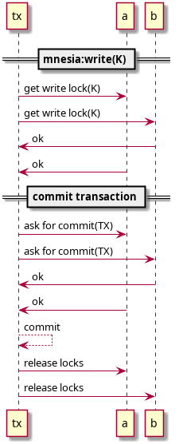

Mnesia internals
I have been studying Mnesia internals for my current job assignment, and I figured that I may start publishing my scattered notes. There is a lot of interesting stuff going on down there. I will update this post with more details.
Disclaimer: I am not an OTP dev, and not a mnesia dev, thus anything that will be posted here will be derived from reading (the poorly documented) code and my own experiments. So THE BLOG POST IS PROVIDED "AS IS", WITHOUT WARRANTY OF ANY KIND, EXPRESS OR IMPLIED, and so on.
1 TODO Transaction flow

2 TODO Scalability
As should be evident from the above diagram, transaction latency is expected to grow when the number of nodes in the cluster grows. Indeed, this effect was observed in the test with the help of netem.
Graph of Mnesia vs. "the new thing" prototype we're working on: